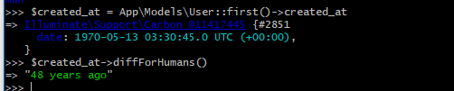

显示微博
获取微博
首先要在用户控制器中 show 动作取出用户发不过的所有微博, 由于之前进行了模型关联, 因此取出一个用户的所有微博可以通过以下 方式
$statuses = $user->statuses();
在我们将用户的所有微博取出之后, 还需要根据微博的创建时间 created_at 对微博进行排序, 让新创建的微博靠前显示,. 我们使用 Eloquent 模型提供的 orderBy 方法, 通过指定字段名和排序方式对微博进行排序
$statuses = $user->statuses()->orderBy('created_at', 'desc');
desc 是英文 descending 的简写, 意为倒序
最后, 由于用户的微博发布数量了能会非常多, 因此我们对取出的微博数据进行分页, 在每个页面最多只显示 30 条微博
$statuses = $user->statuses()->orderBy('created_at', 'desc')->paginate(30);
现在, 可以知道如何为用户控制器 show 动作添加微博动态的读取逻辑了,
app/Http/Controllers/UsersController.php
<?php
namespace App\Http\Controllers;
.
.
.
class UsersController extends Controller
{
.
.
.
public function show(User $user)
{
$statuses = $user->statuses()
->orderBy('created_at', 'desc')
->paginate(30);
return view('users.show', compact('user', 'statuses'));
}
.
.
.
}
compact 方法可以接收多个参数, 在上面代码我们将用户数据 $user 和微博动态数据 $statuses 同时传递给用户个人页面的视图上.
渲染微博
接下来我们构建单条微博的局部视图, 该局部视图最终应用在用户的个人页面上
微博的局部视图包含一条微博动态的发布者, 发布内容和发布日期等基本信息
resources/views/statuses/_status.blade.php
<li id="status-{{ $status->id }}">
<a href="{{ route('users.show', $user->id )}}">
<img src="{{ $user->gravatar() }}" alt="{{ $user->name }}" class="gravatar"/>
</a>
<span class="user">
<a href="{{ route('users.show', $user->id )}}">{{ $user->name }}</a>
</span>
<span class="timestamp">
{{ $status->created_at->diffForHumans() }}
</span>
<span class="content">{{ $status->content }}</span>
</li>
$statu 实例代表的是单条微博的数据 , $user 实例代表的是该微博发布者的数据, 另外这个方法:
$status->created_at->diffForHumans()
该方法的作用是将日期进行友好化处理, 我们可以使用 tinker 来查看该方法的具体输出情况
$ php artisan tinker
在 tinker 中输出第一位用户的创建时间如下

我们发现 diffForHumans 方法生成的时间信息时英文的, 如果使用中文时间, 则需要对 Carbon 进行本地化设置, Carbon 时 php DateTime 的一个简单扩展, laravel 将其默认集成到框架中, 对 Carbon 进行本地化设置很简单, 只要在 AppServiceProvider 中调用 Carbon 的 setLocale 方法即可, AppServiceProvider 时框架的核心, 在 laravel 启动的时候, 会最先加载该文件
app/Providers/AppServiceProvider.php
<?php
namespace App\Providers;
use Illuminate\Support\ServiceProvider;
use Carbon\Carbon;
class AppServiceProvider extends ServiceProvider
{
/**
* Bootstrap any application services.
*
* @return void
*/
public function boot()
{
Carbon::setLocale('zh');
}
/**
* Register any application services.
*
* @return void
*/
public function register()
{
//
}
}
重启 tinker

现在, 我们可以在用户的个人页面使用该局部视图和渲染微博的分页链接了
resources/views/users/show.blade.php
@extends('layouts.default')
@section('title', $user->name)
@section('content')
<div class="row">
<div class="col-md-offset-2 col-md-8">
<div class="col-md-12">
<div class="col-md-offset-2 col-md-8">
<section class="user_info">
@include('shared._user_info', ['user' => $user])
</section>
</div>
</div>
<div class="col-md-12">
@if (count($statuses) > 0)
<ol class="statuses">
@foreach ($statuses as $status)
@include('statuses._status')
@endforeach
</ol>
{!! $statuses->render() !!}
@endif
</div>
</div>
</div>
@stop
在页面中, 我们使用 count($statuses) 方法进行判断当前页main是否存在微博动态, 如果不存在则不对微博的局部视图进行渲染
下面进行样式优化
resources/assets/sass/app.scss
.
.
.
/* statuses */
.statuses {
list-style: none;
padding: 0;
margin-top: 20px;
li {
padding: 10px 0;
border-top: 1px solid #e8e8e8;
position: relative;
}
.user {
margin-top: 5em;
padding-top: 0;
}
.content {
display: block;
margin-left: 60px;
word-break: break-word;
img {
display: block;
padding: 5px 0;
}
}
.timestamp {
color: $gray-light;
display: block;
margin-left: 60px;
}
.gravatar {
margin-right: 10px;
margin-top: 5px;
}
form {
button.status-delete-btn {
position: absolute;
right: 0;
top: 10px;
}
}
}
aside {
textarea {
height: 100px;
margin-bottom: 5px;
}
}
.status_form {
margin-top: 20px;
}
示例微博,
现在用户还没有办法发布微博, 因为我们的微博发布表单还没有构建, 但是通过前面的学习, 我们知道可以使用 laravel 提供的数据填充功能来为应用生成测试数据
首先我们需要为 微博模型 定义好用来生成的假数据的模型工厂 . 我们可以利用 laravel 命令 make:factory 来生成工厂类文件
$ php artisan make:factory StatusFactory
内容填入
database/factories/StatusFactory.php
<?php
use Faker\Generator as Faker;
$factory->define(App\Models\Status::class, function (Faker $faker) {
$date_time = $faker->date . ' ' . $faker->time;
return [
'content' => $faker->text(),
'created_at' => $date_time,
'updated_at' => $date_time,
];
});
接着创建一个 StatusesTableSeeder 文件对微博假数据进行批量生成
$ php artisan make:seeder StatusesTableSeeder
我们不需要每个用户都生成大量的微博, 为了测试方便, 只对前三位生成 100 条微博假数据
database/seeds/StatusesTableSeeder.php
<?php
use Illuminate\Database\Seeder;
use App\Models\User;
use App\Models\Status;
class StatusesTableSeeder extends Seeder
{
/**
* Run the database seeds.
*
* @return void
*/
public function run()
{
$user_ids = ['1','2','3'];
$faker = app(Faker\Generator::class);
$statuses = factory(Status::class)->times(100)->make()->each(function ($status) use ($faker, $user_ids) {
$status->user_id = $faker->randomElement($user_ids);
});
Status::insert($statuses->toArray());
}
}
我们通过 app() 方法来获取一个 Faker 容器的实例, 并借助 randomElement 方法来取出用户 id 数组中任意一个元素并赋值给微博的 user_id , 使得每个用户都拥有不同数量的微博
接下来需要在 DatabaseSeeder 类中指定要调用微博数据填充文件
database/seeds/DatabaseSeeder.php
<?php
use Illuminate\Database\Seeder;
use Illuminate\Database\Eloquent\Model;
class DatabaseSeeder extends Seeder
{
/**
* Run the database seeds.
*
* @return void
*/
public function run()
{
Model::unguard();
$this->call(UsersTableSeeder::class);
$this->call(StatusesTableSeeder::class);
Model::reguard();
}
}
最后对数据库进行重置和填充
$ php artisan migrate:refresh --seed

微博数据已经生成